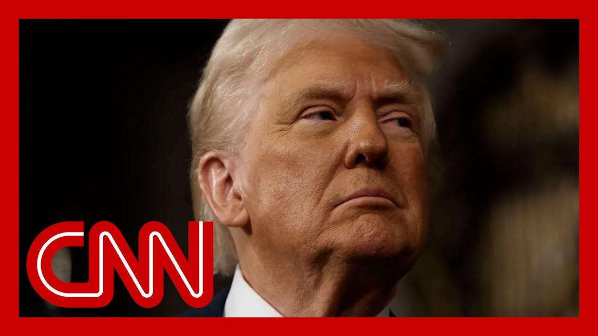

【特朗普对伊朗“失去耐心”，召开战情室会议】
Summary: Trump expresses frustration with Iran but has not decided on military action, as new tensions escalate with missile launches and U.S. carrier deployments. Iran accuses the U.S. of direct involvement, while Tehran residents report explosions and evacuations.
摘要： 特朗普对伊朗表示不满但尚未决定军事行动，紧张局势因导弹发射和美国航母部署升级。伊朗指控美国直接参与冲突，德黑兰居民报告爆炸和撤离情况。

⏱️ Estimated Reading Time: 13 min
📚 六级生词 📚 雅思生词 📚 托福生词 📚 专八生词 📚 SAT生词 📚 考研生词 📚 GRE生词 📚 高考生词
Trump says he's out of patience, but he still insists that he has not made a final dec on whether U.S. troops will be attacking Iran.
特朗普表示他已失去耐心，但仍坚称未最终决定美军是否攻击伊朗。
Moments ago, Trump wrapped up a meeting with his security team in the Situation Room.
不久前，特朗普结束了与安全团队在战情室的会议。
And we have new video into CNN t showing an Iranian missile flying over Jerusalem.
CNN最新视频显示一枚伊朗导弹飞越耶路撒冷上空。
The pace of that barrage has cha We are learning that a third U.S aircraft carrier, the USS Ford, will now be making toward the conflict between Israel and Iran.
袭击节奏变化之际，我们获悉第三艘美国航母“福特号”正驶向以伊冲突区域。
What is clearly already an air w The Ford is the newest, largest, and most advanced U.S. aircraft carrier.
显然已是空战。“福特号”是美国最新、最大、最先进的航母。
Trump saying tonight he hasn't yet decided how involved the U.S. will become in this war.
特朗普今晚表示尚未决定美国将如何介入这场战争。
I have ideas as to what to do, but I haven't made a final.
我有行动构想，但未最终定案。
I like to make the final decisio one second before it's too, you know, because things change.
我喜欢在最后一刻做决定，因为局势会变。
I mean, especially with war. Things change with the war.
尤其是战争时期，战况瞬息万变。
It can go from one extreme to th Wars was very bad.
可能从一个极端到另一个极端。战争非常糟糕。
There was no reason for this to So there's no reason for this to be a war.
本无理由开战，现在仍无理由。
But Trump made it clear today to Iran that when it comes to U. involvement, time is of the esse
但特朗普今日明确向伊朗表示，美国若介入，时间至关重要。
Mr. president, have you given the Iranians an ultimatum?
总统先生，您是否向伊朗发出最后通牒？
you could say so. They know. They know what's happ
可以这么说。他们心知肚明。
Maybe you could go the ultimate. The ultimate an ultimatum, right
或许可称终极通牒。
But Iran today sent this letter to the U.N.. Three pages.
但伊朗今日向联合国递交三页信函。
An Iranian source shared it with it says that there is undeniable evidence of direct, united States involvement in the war against Iran.
伊朗消息人士透露，信中称有“不可否认的证据”表明美国直接参与对伊战争。
Those are the words they use. And the Supreme Leader, Ayatollah Ali Khamenei, seemingly unfazed by Trump's ult
这是他们的措辞。最高领袖哈梅内伊看似无视特朗普通牒。
Instead, he issued this threat t You will recall that in a year, involvement in this matter will be 100% at their loss.
反而威胁称：“一年后，他们将百分百自食恶果。”
The loss they receive will probably be much more than the damage Iran will bear.
他们的损失或将远超伊朗所受损害。
Yeah, I total loss to saying Iran will not sur
伊朗绝不投降。
So when you have ultimate ultimatums, responding and then they respond with will not surrender.
双方互发终极通牒，显然局势不妙。
Obviously that's not a good plac
显然情况不乐观。
Trump was asked by our Elaina Treen about the ayatollahs refusal to surrender.
埃莱娜·特林询问特朗普对哈梅内伊拒降的回应。
He said this. You say good luck. When does your patience run out?
他说：“祝你好运。你的耐心何时耗尽？”
It's already running out. That's why we're doing what we'r
耐心已耗尽，我们正采取行动。
And tonight we have exclusive vi into out front.
今晚我们独家获取前线画面。
I'll show you what this is. This is from the Iranian filmmaker Aporia Noori.
这是伊朗电影人阿波利亚·努里的拍摄。
She is in Tehran. Not many images coming out of Te and certainly not many from that aren't state media.
她在德黑兰。当地流出的非官方影像极少。
So this is important. This is from a real person who tells us, quote, I hear in witness numerous explosions throughout the day and night.
因此这段真实记录至关重要：“我日夜听闻无数爆炸声。”
I wake up each morning to the shaking of walls and windows in my home, while the shadow of war looms ov
每日清晨在房屋震动中惊醒，战争阴云笼罩。
the lives of Iranian citizens. The solidarity among the people of Iran has grown stronger than ever.
伊朗民众空前团结。
And that is a crucial question, because after a bomb is dropped, if one is you, then deal with, well, is it going to be a civil in a country with 90 plus millio
关键问题在于：轰炸后的9000万人口国家会否陷入内战？
And does the US own it? We're going to take you to the g in Tehran in just a moment, where Fred Pleitgen and his team are now the first Western journa
美国是否担责？稍后将连线德黑兰的弗雷德·普莱特根，其团队是首批入境伊朗的两方记者。
to enter Iran since this latest conflict with Israel began. I begin, though, with Jeff Zelen
冲突爆发后首支进入伊朗的两方记者团队。首先请听杰夫·泽勒尼报道。
He is at the white House tonight And, Jeff, we know Trump just wrapped up that security meeting just moments ag
他在白宫。杰夫，特朗普刚结束安全会议。
What are you learning happened t And as to whether any decisions have been Aaron, tonight, President Trump is no longer in Wing of the white House.
有何进展？是否已做决定？亚伦，特朗普现不在西翼。
We know that because the marine standing at his post right outside the West Wing doors is no longer
因西翼门外的海军陆战队卫兵已撤岗。
That means the president is in the residence of the white And of course, still contemplating all of this.
意味着总统在白宫住所仍在权衡。
But that meeting in the Situatio Room is just the one of a series of meetings and conversations the president had all day long.
战情室会议仅是全天系列会议之一。
He started this day here at the white House, as we all well know, saying, I m I may not do it.
今晨他在白宫表示“我可能不会行动”。
No one knows what I'm thinking. That was a message to his suppor and detractors alike, of course.
“无人知我所想”，此言向支持者与反对者同时传递信号。
But even as I am speaking to you right now, Aaron I can hear some protests on Pennsylvania Avenue in the distance urging the president to not go t
此刻我还能听到远处宾夕法尼亚大道的反战抗议。
But of course, he is, you know, hearing from a variety of advise
当然他也听取多方建议。
And I am told that even as plans are being mad the government, we've seen the military, of course, fall into a line to fortify a U. troops in the region should there be an attack.
据悉政府制定计划时，军方已部署强化该地区美军。
But also the discussion is on the after math of an attac not simply the idea of striking the nuclear in Iran.
但讨论焦点是攻击后果，而非仅打击伊朗核设施。
It's on the aftermath of that, and that is what is really hangi
后续影响才是关键。
I am told the entire question he that the president is really trying to wrestle with Is he going to engage in a protracted war, something he has long campaigned and waged against?
据悉总统正纠结是否卷入长期战争——这与他长期反对的立场相悖。
He's been such a critic in all of his time in public lif as a candidate of the Bush administrations, a decision to enter, the Middle East War in such different circumstances
他作为候选人和公众人物始终批评布什政府发动中东战争。
So I'm told he is thinking about the aftermath, and he does believe I'm told a strike is possible without getting involved in a long entanglement.
因此他考虑后果，并认为可实施打击而不陷入长期泥潭。
Aaron. But that is very, very much an open question.
但这仍是未知数。
We all remember back some two decades ago when it seemed military strikes and an ouster of a leader would be quick and easy.
二十年前人们也曾以为军事打击和推翻政权轻而易举。
It was anything but that. Aaron. Yeah, we all remember, ri
结果截然不同。
The statues toppled and everybody thought, okay, gre Now you go home. The victor and well, God knows we all saw what happened then over the next two decades.
雕像倒塌时众人以为胜利凯旋，谁知后续二十年如何发展。
Jeff Zeleny, thank you very much And I want to go to Fred Pleitgen, as I said, incredible work here.
感谢杰夫。现在连线弗雷德·普莱特根，他的团队成就非凡。
He has just arrived on the ground in Te Fred's team is the first team of Western journalists to enter Iran since this latest, conflict with Israel began.
他们首批进入冲突爆发后的伊朗。
And, Fred, what are you seeing there tonigh
弗雷德，你目睹了什么？
Yeah, we've been both hearing and seeing anti-aircraft fire in the skies over Tehran.
德黑兰上空可见防空火力。
Also, some pretty loud thuds could be heard as well. It's unclear whether or not those are possible airstrikes or maybe even interceptions by the air defense forces here.
还有巨响，可能是空袭或防空拦截。
But one thing that is clear going through the streets of Teh is that they are pretty empty, and most of the shops are also c
但德黑兰街道空荡，店铺关闭。
As we were driving into the city we did see a decent amount of tr going in the other direction trying to get out of town, and we know that a lot of people have left town since the Israeli air strikes began here, but at the same time the traffic was still somewhat f
入城时见大量车辆出逃，但交通仍部分畅通。
One of the other things that we noticed as well, and we did drive through a substantial part of Iran to get to this place, is that in many other places it appears to be almost business as usual.
伊朗其他地区看似如常。
There were a lot of cars on the There were factories that appeared to be working. Also a lot of trucks that were driving on the street
车辆、工厂、卡车仍在运作。
And folks that we spoke to on th were basically saying they were just trying to get by and continue the way that they had been befor
民众称正努力维持生活。
Nevertheless, of course, people here in Tehran understand that the situation fo could be dangerous and many have actually left the
但德黑兰民众知悉危险，许多人已撤离。
And this comes as the Iranians are vowing to fight on the supreme leader of Iran, Ayatollah Ali Khamenei.
与此同时，伊朗最高领袖誓言战斗。
He came out and said that Iran and the Irani would never surrender.
他宣称伊朗绝不投降。
Of course, what the Iranians have been doin is in the face of the airstrikes that have been coming in, have been lobbing their miss towards Israeli territory for, like in CNN Tehran.
伊朗在遭空袭同时向以色列发射导弹。
All right. Thanks so much to Fred. And I want to go now to the former Israeli Prime Minister, Naftali Bennett.
感谢弗雷德。现在连线以色列前总理贝内特。
Prime Minister, I appreciate you And I know you're in central Israel tonight.
总理先生，感谢连线。
You just heard Fred Pleitgen talking about some of the traffi going out of Tehran.
您听到弗雷德提及德黑兰出城车流。
And I know we've all seen the images right over the weekend of the bumper to bumper traffic, from from where you sit right no
您如何看待民众撤离？
Would it be the right thing for Tehran to be essentially eva Would that be the right thing to
针对军事目标区域，提前疏散是正确做法。
Well, in specific areas that were targ which are military facilities or apparatus facilities, we notify that in advance in order to minimize, civilian deaths and allow people to evacuate.
我们提前通知以减少平民伤亡。
So from those particular areas. It's a good idea. Yeah, well, we recommend and we're telling the, the citizens to move out for the time being.
建议民众暂时撤离。
So I want to play again. Prime Minister, I know you heard this, but, for anyone who is not what Trump said today because he talked about the the Fordo nuclear site, obviously the crucial one where we understand that a lot of the nuclear apparatus is buried potentially 300 or more feet underground.
特朗普今日谈及福尔多核设施——关键地下核设施。
Here's what he said. We're the only ones that have the capability to do it, but that doesn't mean I'm going to do it at all.
他说：“唯美国有能力行动，但这不意味着我会行动。”
They haven't made a decision. Prime Minister, I'm actually cur about something specific.
尚未决定。总理先生，以色列是否有能力独立打击福尔多？
I know that that the what we understand is that when it comes to an actu to do it, that the that the United States is the one with the capability to do that. That's what he's referring to.
特朗普指美国具备此能力。
But I'm curious as to whether Israel has other w I mean, whether that can be comm or something else.
但以色列是否有其他手段？
But do you believe that Israel has the capability in any other way, to take out the Fordo nuclear site without American he
以色列能否不靠美国摧毁福尔多？
Well, obviously I'm not going to operational plans, but I will say that as the war progresses, as the Ir air defenses diminish, and that weakens, obviously, that presents new, possibilities that didn't exist
恕不透露作战计划，但伊朗防空削弱将开启新可能。